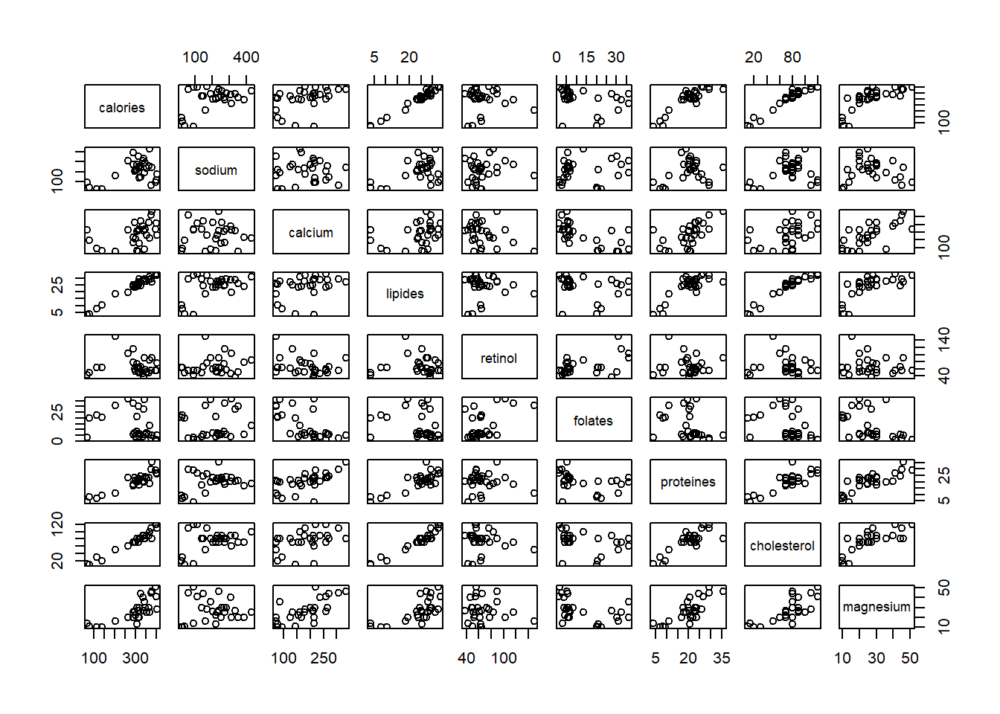
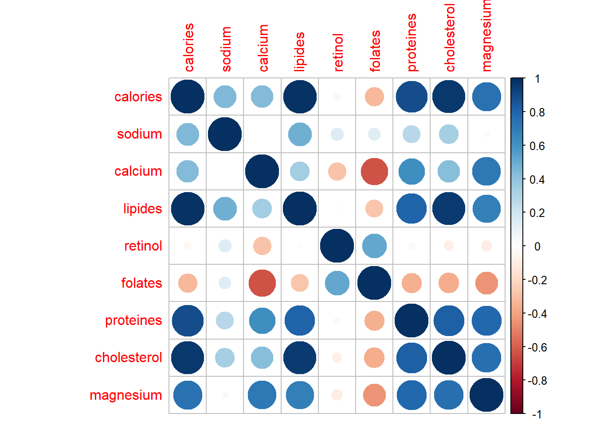
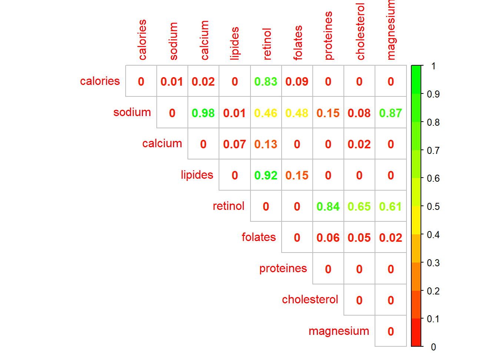
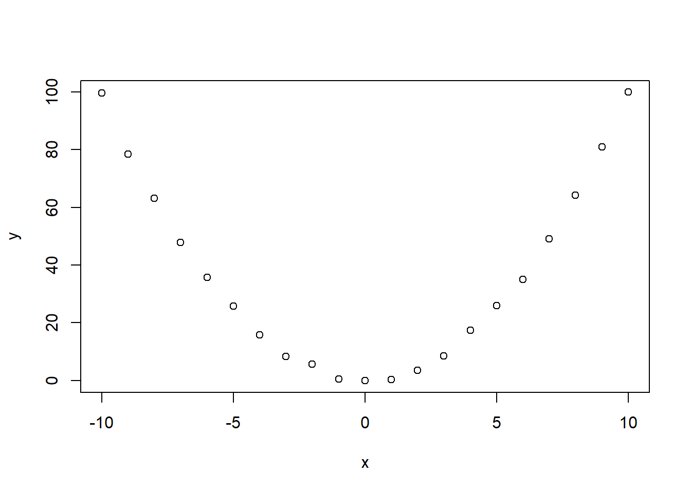
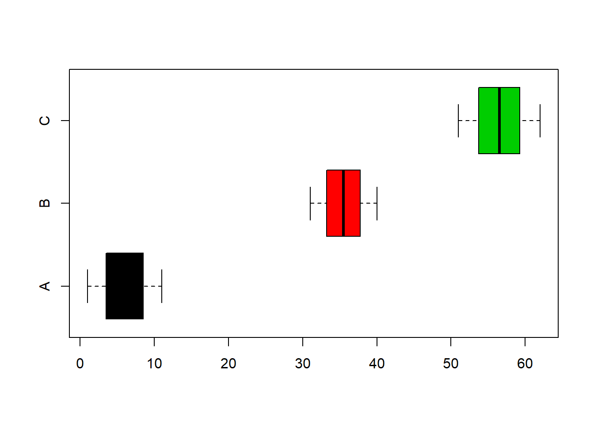
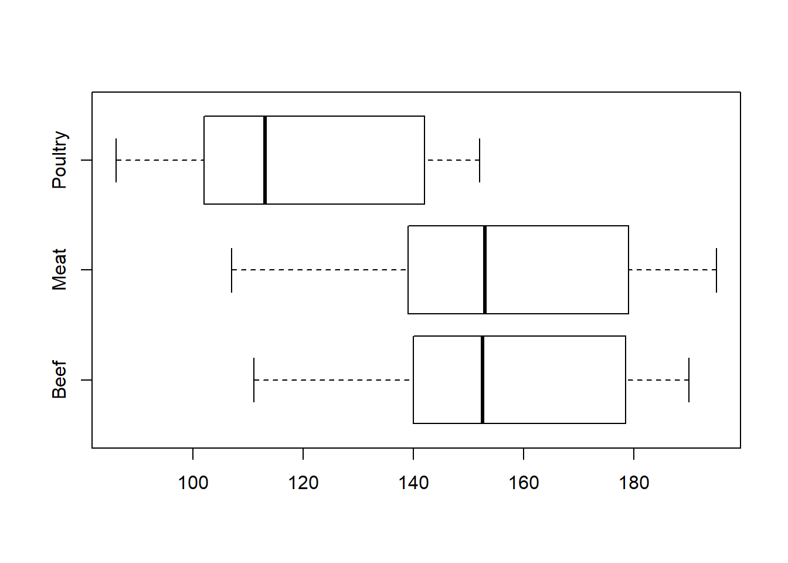
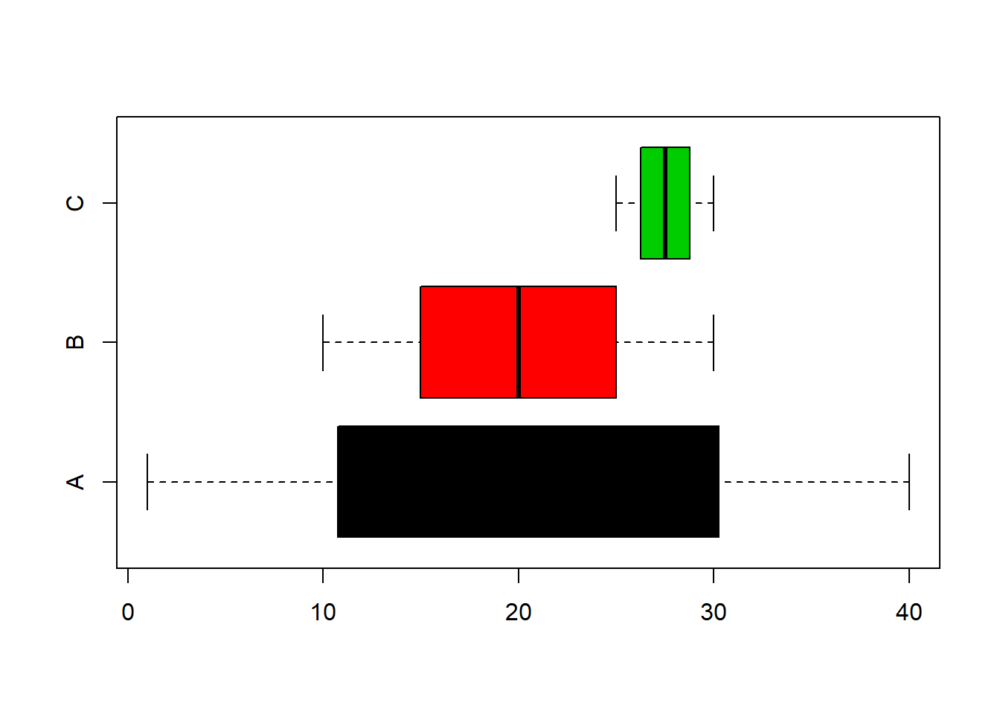

Chapitre 2 Test indépendance
Les tests d’indépendances permettent de définir s’il existe un lien entre deux variables. Il existe différent test d’indépence, en voici quelques exemples :
- Test indépendance entre deux variables quantitatives / Test de corrélation Pearson
- Test d’indépendance entre deux variables qualitatives / Test du Chi²
- Test d’indépendance entre une variable qualitative et une quantitative / Test de Fisher avec l’analyse de la variance (ANOVA)
2.1 Test de corrélation
L’intérêt des tests de corrélation est d’apporter plus de pertinence et fiabilité aux coefficients de corrélation. Il existe différents test de corrélation, nous utilisons celui de Pearson.
On travaille avec le jeu de données fromage 🧀

## calories sodium calcium lipides retinol
## calories 1.00000000 0.447224073 0.433400087 0.98363377 -0.04288511
## sodium 0.44722407 1.000000000 0.005958892 0.48334434 0.14432755
## calcium 0.43340009 0.005958892 1.000000000 0.34113187 -0.28954677
## lipides 0.98363377 0.483344342 0.341131874 1.00000000 -0.01835291
## retinol -0.04288511 0.144327552 -0.289546767 -0.01835291 1.00000000
## folates -0.32109786 0.136561416 -0.637502539 -0.27654282 0.51726643
## proteines 0.88537159 0.275997906 0.610704864 0.80930257 -0.03917254
## cholesterol 0.96192339 0.332993972 0.428446215 0.95544387 -0.08697243
## magnesium 0.74544320 0.031112805 0.710480424 0.68986008 -0.09980065
## folates proteines cholesterol magnesium
## calories -0.3210979 0.88537159 0.96192339 0.74544320
## sodium 0.1365614 0.27599791 0.33299397 0.03111281
## calcium -0.6375025 0.61070486 0.42844622 0.71048042
## lipides -0.2765428 0.80930257 0.95544387 0.68986008
## retinol 0.5172664 -0.03917254 -0.08697243 -0.09980065
## folates 1.0000000 -0.35287125 -0.36634610 -0.44706739
## proteines -0.3528712 1.00000000 0.81713835 0.78777726
## cholesterol -0.3663461 0.81713835 1.00000000 0.75245338
## magnesium -0.4470674 0.78777726 0.75245338 1.00000000## Warning: package 'corrplot' was built under R version 3.5.3## corrplot 0.84 loaded
On pose les hypothèses de départ
H0 : Variables indépendantes si p-value > 5%
H1 : Variables non indépendantes si p-value < 5%
2.1.1 Lipide vs Magnesium
La première sortie correspond au coefficient de corrélation, la seconde à la p-value (ou probabilité critique)
## [1] 0.6898601##
## Pearson's product-moment correlation
##
## data: df$lipides and df$magnesium
## t = 4.9515, df = 27, p-value = 3.469e-05
## alternative hypothesis: true correlation is not equal to 0
## 95 percent confidence interval:
## 0.4327766 0.8431785
## sample estimates:
## cor
## 0.6898601
H1 : Variables non indépendantes si p-value < 5%
2.1.2 Sodium vs Retinol
##
## Pearson's product-moment correlation
##
## data: df$sodium and df$retinol
## t = 0.75788, df = 27, p-value = 0.4551
## alternative hypothesis: true correlation is not equal to 0
## 95 percent confidence interval:
## -0.2345870 0.4851693
## sample estimates:
## cor
## 0.1443276H0 : Variables indépendantes si p-value > 5%
Si on veut rejeter H0 et prendre H1, j’ai 45,5% de chance de me tromper
Les tests statistiques sont trés sensibles à la taille de l’échantillon. Un coefficient de corrélation de 0.14 n’aura pas la même significativité sur un échantillon de 29 fromages qu’un échantillon de 319 fromages avec le même coefficient de corrélation.
On construit un dataframe en dupliquant le nombre de lignes
sodium <- rep(df$sodium,times = 10)
retinol <- rep(df$retinol,times = 10)
nom <- rep(rownames(df),times = 10)
df_10 <- data.frame(nom,sodium,retinol)Chaque fromage apparaît plusieurs fois, on a augmenté la taille de l’échantillon
##
## Babybel Beaufort Bleu
## 10 10 10
## Camembert Cantal CarredelEst
## 10 10 10
## Chabichou Chaource Cheddar
## 10 10 10
## Comte Coulomniers Edam
## 10 10 10
## Emmental Fr.chevrepatemolle Fr.fondu.45
## 10 10 10
## Fr.frais20nat. Fr.frais40nat. Maroilles
## 10 10 10
## Morbier Parmesan Petitsuisse40
## 10 10 10
## PontlEveque Pyrenees Reblochon
## 10 10 10
## Rocquefort SaintPaulin Tome
## 10 10 10
## Vacherin Yaourtlaitent.nat.
## 10 10On effectue un autre test de corrélation avec les mêmes variables sur l’échantillon plus grand.
##
## Pearson's product-moment correlation
##
## data: df_10$sodium and df_10$retinol
## t = 2.4752, df = 288, p-value = 0.01389
## alternative hypothesis: true correlation is not equal to 0
## 95 percent confidence interval:
## 0.0296407 0.2552637
## sample estimates:
## cor
## 0.1443276H1 : Variables non indépendantes si p-value < 5%
On obtient logiquement le même coefficient de corrélation, mais en revanche, cette fois si la p-value est proche de 0.
2.1.3 Matrice des p-values
On effectue un test de corrélation sur chaque variable 2 à 2 en isolant uniquement la p-value
get_pvalue <- function(x,y){
p <- cor.test(df[,x],df[,y])$p.value
return(p)
}
colonne <- colnames(df)
ligne <- colnames(df)
df_pvalues <- outer(X = colonne, Y = ligne, FUN = Vectorize(get_pvalue))
colnames(df_pvalues) <- colnames(df)
rownames(df_pvalues) <- colnames(df)On affiche la matrice des corrélations avec un gradiant de couleur
corrplot(df_pvalues,
cl.lim=c(0,1), method="number", type="upper",
col=colorRampPalette(c("white","white","red","yellow","green"))(20))
2.1.4 Cas de relation non linéaire
Cas d’une relation non-linéaire et non-monotone

##
## Pearson's product-moment correlation
##
## data: x and y
## t = 0.0057615, df = 19, p-value = 0.9955
## alternative hypothesis: true correlation is not equal to 0
## 95 percent confidence interval:
## -0.4306107 0.4327616
## sample estimates:
## cor
## 0.001321772##
## Spearman's rank correlation rho
##
## data: x and y
## S = 1520, p-value = 0.9573
## alternative hypothesis: true rho is not equal to 0
## sample estimates:
## rho
## 0.01298701##
## Kendall's rank correlation tau
##
## data: x and y
## T = 107, p-value = 0.9287
## alternative hypothesis: true tau is not equal to 0
## sample estimates:
## tau
## 0.019047622.2 Test du CHI²
L’intérêt du test du Khi² est de mesurer l’indépendance entre deux variables qualitatives à partir du tableau de contigence.
H0 : Variables indépendantes si p-value > 5% H1 : Variables non indépendantes si p-value < 5%
2.2.1 Titanic
On travaille sur le jeu de données Titanic 🧊⛴
##
## Pearson's Chi-squared test
##
## data: df$Survived and df$PClass
## X-squared = 172.3, df = 2, p-value < 2.2e-16H1 : Variables non indépendantes si p-value < 5%
## $names
## [1] "statistic" "parameter" "p.value" "method" "data.name" "observed"
## [7] "expected" "residuals" "stdres"
##
## $class
## [1] "htest"## df$PClass
## df$Survived 1st 2nd 3rd
## 0 211.642 184.03656 467.3214
## 1 110.358 95.96344 243.67862.2.2 Exemple du support
##
## Pearson's Chi-squared test
##
## data: data
## X-squared = 6.0504, df = 3, p-value = 0.1092H0 : Variables indépendantes si p-value > 5% Si on veut rejeter H0 et prendre H1, j’ai 10,9% de chance de me tromper
Lecture dans la table du Chi2
p <- seq(0.80, 0.90, 0.005)
dof <- seq(1,3)
chisq_table <- outer(p, dof, function(x,y) qchisq(x,y))
chisq_table <- t(chisq_table)
colnames(chisq_table) <- 1 - p
rownames(chisq_table) <- dof
chisq_table <- round(chisq_table,2)| 0.2 | 0.195 | 0.19 | 0.185 | 0.18 | 0.175 | 0.17 | 0.165 | 0.16 | 0.155 | 0.15 | 0.145 | 0.14 | 0.135 | 0.13 | 0.125 | 0.12 | 0.115 | 0.11 | 0.105 | 0.1 |
|---|---|---|---|---|---|---|---|---|---|---|---|---|---|---|---|---|---|---|---|---|
| 1.64 | 1.68 | 1.72 | 1.76 | 1.80 | 1.84 | 1.88 | 1.93 | 1.97 | 2.02 | 2.07 | 2.12 | 2.18 | 2.23 | 2.29 | 2.35 | 2.42 | 2.48 | 2.55 | 2.63 | 2.71 |
| 3.22 | 3.27 | 3.32 | 3.37 | 3.43 | 3.49 | 3.54 | 3.60 | 3.67 | 3.73 | 3.79 | 3.86 | 3.93 | 4.00 | 4.08 | 4.16 | 4.24 | 4.33 | 4.41 | 4.51 | 4.61 |
| 4.64 | 4.70 | 4.76 | 4.83 | 4.89 | 4.96 | 5.02 | 5.09 | 5.17 | 5.24 | 5.32 | 5.40 | 5.48 | 5.56 | 5.65 | 5.74 | 5.83 | 5.93 | 6.03 | 6.14 | 6.25 |
📢 Taille de l’échantillon
Les tests d’indépendance sont trés sensibles à la taille des échantillons. Ici on divise par 100 pour avoir des effectifs faibles mais en conservant les répartitions.
##
## Pearson's Chi-squared test
##
## data: data/100
## X-squared = 0.060504, df = 3, p-value = 0.9961H0 : Variables indépendantes si p-value > 5%
Ici on multiplie par 100 pour avoir des effectifs grands mais en conservant les répartitions
##
## Pearson's Chi-squared test
##
## data: data * 100
## X-squared = 605.04, df = 3, p-value < 2.2e-16H1 : Variables non indépendantes si p-value < 5%
2.3 ANOVA 1
On effectue une analyse de variance pour mesurer l’indépendance entre une variable qualitative et une quantitative.
Pour illustrer cela, on utilise le jeu de données Hotdogs 🌭.
| Type | Calories | Sodium |
|---|---|---|
| Beef | 186 | 495 |
| Beef | 181 | 477 |
| Beef | 176 | 425 |
| Beef | 149 | 322 |
| Beef | 184 | 482 |
| Beef | 190 | 587 |
| Beef | 158 | 370 |
| Beef | 139 | 322 |
| Beef | 175 | 479 |
| Beef | 148 | 375 |
| Beef | 152 | 330 |
| Beef | 111 | 300 |
| Beef | 141 | 386 |
| Beef | 153 | 401 |
| Beef | 190 | 645 |
| Beef | 157 | 440 |
| Beef | 131 | 317 |
| Beef | 149 | 319 |
| Beef | 135 | 298 |
| Beef | 132 | 253 |
| Meat | 173 | 458 |
| Meat | 191 | 506 |
| Meat | 182 | 473 |
| Meat | 190 | 545 |
| Meat | 172 | 496 |
| Meat | 147 | 360 |
| Meat | 146 | 387 |
| Meat | 139 | 386 |
| Meat | 175 | 507 |
| Meat | 136 | 393 |
| Meat | 179 | 405 |
| Meat | 153 | 372 |
| Meat | 107 | 144 |
| Meat | 195 | 511 |
| Meat | 135 | 405 |
| Meat | 140 | 428 |
| Meat | 138 | 339 |
| Poultry | 129 | 430 |
| Poultry | 132 | 375 |
| Poultry | 102 | 396 |
| Poultry | 106 | 383 |
| Poultry | 94 | 387 |
| Poultry | 102 | 542 |
| Poultry | 87 | 359 |
| Poultry | 99 | 357 |
| Poultry | 107 | 528 |
| Poultry | 113 | 513 |
| Poultry | 135 | 426 |
| Poultry | 142 | 513 |
| Poultry | 86 | 358 |
| Poultry | 143 | 581 |
| Poultry | 152 | 588 |
| Poultry | 146 | 522 |
| Poultry | 144 | 545 |
On va tester l’indépendance entre la variable qualitative Type et la variable quantitatives Calories.

Dans une ANOVA, on cherche à déterminer si les moyennes des groupes sont significativement différentes. On pose donc :
- H0 : Les moyennes de chaque groupe sont égales si p-value > 5%
- H1 : Les moyennes de chaque groupe ne sont pas toutes égales si p-value < 5%
Dans une ANOVA, on étudie la variance de chacun de ces groupes. Pour cela on utilise la fonction aov().
## Df Sum Sq Mean Sq F value Pr(>F)
## Type 2 17692 8846 16.07 3.86e-06 ***
## Residuals 51 28067 550
## ---
## Signif. codes: 0 '***' 0.001 '**' 0.01 '*' 0.05 '.' 0.1 ' ' 1H1 : Les moyennes de chaque groupe ne sont pas toutes égales
Quand on dispose d’un petit échantillon, la pertinence de ce test repose sur la validation de plusieurs hypothèses :
- l’indépendance entre les échantillons de chaque groupe
- l’égalité des des variances que l’on peut verifier avec un test de Bartlett.
- la normal
2.3.1 L’indépendance
L’indépendance est une des 3 conditions de validité d’une ANOVA. Seul le contexte de l’étude permet de s’assurer de l’indépendance entre les échantillons de chaque groupe (ici beef, poultry, chicken.)
2.3.2 L’égalité des variances
On parle aussi d’homoscédasticité. C’est une des 3 conditions de validité d’une ANOVA. On cherche à démontrer que les variances de chaque groupe sont égales. Dans un boxplot, l’amplitude des boîtes traduit graphiquement l’égalité des variances.

Mais c’est le test de bartlett qui permet de tester si les variances sont significativement différentes ou non avec :
- H0 : Les variances de chaque groupe sont égales si p-value > 5%
- H1 : Les variances de chaque groupe ne sont pas toutes égales < 5%
##
## Bartlett test of homogeneity of variances
##
## data: Calories by Type
## Bartlett's K-squared = 0.26732, df = 2, p-value = 0.8749H0 : Les variances de chaque groupe sont égales. La deuxième condition pour effectuer une anova est validée.
2.3.3 Normalité des résidus
C’est une des 3 conditions de validité d’une ANOVA. L’objectif est de s’assurer que les résidus suivent une loi normale afin de ne pas affirmer qu’il existe une différence de moyenne entre les groupes qui serait causée par le hasard.
Dans R, on utilise le test de Shapiro-Wilk pour tester la normalité des résidus où :
- H0 : Les résidus suivent une loi normale si p-value > 5%
- H1 : Les résidus ne suivent pas une loi normale si p-value < 5%
##
## Shapiro-Wilk normality test
##
## data: aov$residuals
## W = 0.94199, p-value = 0.0113H1 : Les résidus ne suivent pas une loi normale
2.3.4 Calcul - Cas des variances égales
a <- seq(from = 1, to = 11, length.out = 9 )
b <- seq(from = 31, to = 40, length.out = 9 )
c <- seq(from = 51, to = 62, length.out = 9 )## Valeur Groupe
## 1 1.00 A
## 2 2.25 A
## 3 3.50 A
## 4 4.75 A
## 5 6.00 A
## 6 7.25 AComment calculer le tableau récaptitulatif de l’analyse de la variance :
## Df Sum Sq Mean Sq F value Pr(>F)
## Groupe 2 11585 5792 491 <2e-16 ***
## Residuals 24 283 12
## ---
## Signif. codes: 0 '***' 0.001 '**' 0.01 '*' 0.05 '.' 0.1 ' ' 1Variance intra classes
SCE_a <- (a - mean(a))^2
SCE_b <- (b - mean(b))^2
SCE_c <- (c - mean(c))^2
intra <- sum(SCE_a + SCE_b + SCE_c)
intra## [1] 283.125Variance inter classes
moyenne <- mean(df$Valeur)
moyenne_facteur <- tapply(X = df$Valeur,
INDEX = df$Groupe,
FUN = mean)
longueur_facteur <- tapply(X = df$Valeur,
INDEX = df$Groupe,
FUN = length)
inter <- sum(longueur_facteur*((moyenne_facteur - moyenne)^2))
inter## [1] 11584.5Degré de liberté
## [1] 2## [1] 24Calcul de la statistique de test de Fisher
## [1] 490.9987On lit dans la table de Fisher
## [1] 0Réciproque de la loi de Fisher pour retrouver la statistique de test.
## [1] Inf2.3.5 Calcul - Cas des variances inégales
a <- seq(from = 1, to = 40, length.out = 9 )
b <- seq(from = 10, to = 30, length.out = 9 )
c <- seq(from = 25, to = 30, length.out = 9 )## Valeur Groupe
## 1 1.000 A
## 2 5.875 A
## 3 10.750 A
## 4 15.625 A
## 5 20.500 A
## 6 25.375 A
Comment calculer le tableau récaptitulatif de l’analyse de la variance :
## Df Sum Sq Mean Sq F value Pr(>F)
## Groupe 2 316.5 158.25 2.082 0.147
## Residuals 24 1824.4 76.02Variance intra classes
SCE_a <- (a - mean(a))^2
SCE_b <- (b - mean(b))^2
SCE_c <- (c - mean(c))^2
intra <- sum(SCE_a + SCE_b + SCE_c)
intra## [1] 1824.375Variance inter classes
moyenne <- mean(df$Valeur)
moyenne_facteur <- tapply(X = df$Valeur,
INDEX = df$Groupe,
FUN = mean)
longueur_facteur <- tapply(X = df$Valeur,
INDEX = df$Groupe,
FUN = length)
inter <- sum(longueur_facteur*((moyenne_facteur - moyenne)^2))
inter## [1] 316.5Degré de liberté
## [1] 2## [1] 24Calcul de la statistique de test de Fisher
## [1] 2.081809On lit dans la table de Fisher
## [1] 0.1466471Réciproque de la loi de Fisher pour retrouver la statistique de test.
## [1] 2.081809